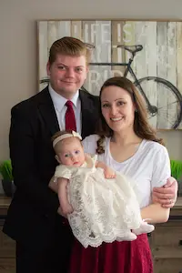

Miriam Call | WDD 130
Hello! My name is Miriam Call and I am from Rexburg Idaho. I am a mom of a sweet 6 month old girl. She is just starting too eat solid foods. Her most recent favorite is banana. She is such a joy in our little family. Being a mom has been something I have grown to love. I also love crafts, cooking, and holidays. My favorite holiday is Christmas. My sweet husband lets me get the decorations I wish and then lets me decorate our home for any holiday I feel is important. He even has given me Christmas dishes for the Christmas season. Most recently in my life I have been learning to code which has been a fun adventure. It is nothing like I expected but I love it. It has helped me understand a lot more of how things in the world work when it comes to technology. I also feel that I have better conversatinos with my husband. He loves to code and was excited I have been learning. It has been a fun thing for us to work on together. I love life and all there is to experiance in it. I feel so blessed to be in the places I am now with a bright future ahead where I can make dreams come true.